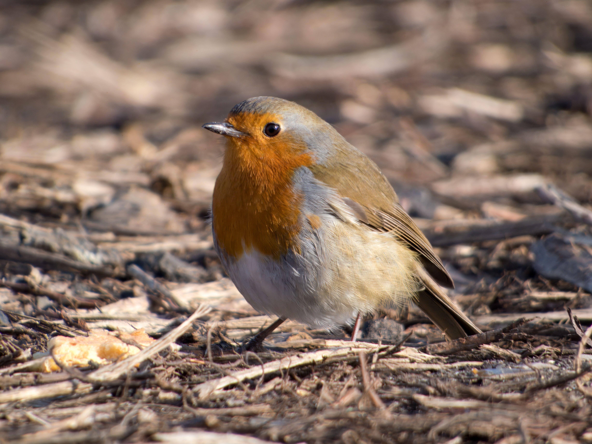

The European Robin is a small, familiar songbird recognized by its bright orange-red breast, brown upperparts, and pale underside. It occurs in woodland, gardens, parks, hedgerows, scrub, and other habitats with dense vegetation and suitable ground for foraging. In Britain and Ireland it is especially familiar around gardens and human settlements, while elsewhere in Europe it is strongly associated with cool, damp woodland and thick undergrowth. It feeds mainly on insects, worms, spiders, and other small invertebrates during the warmer months, while seeds and berries become more important during winter. European Robins are highly territorial and can be surprisingly aggressive toward other robins despite their small size. Compared with the similar Bluethroat, the European Robin has a much more obvious orange-red breast and lacks the Bluethroat's blue throat pattern. It can also be distinguished from the Nightingale by its orange breast, shorter tail, and more compact appearance. The female usually builds the nest in a cavity, bank, recess, or other sheltered location, sometimes surprisingly close to the ground.